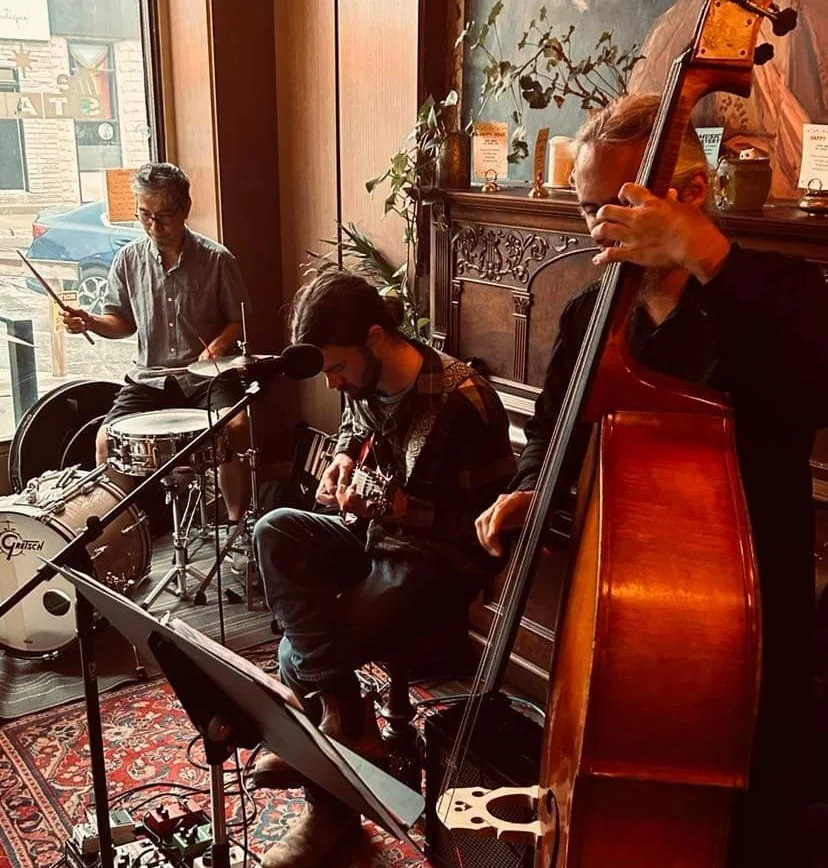

Since spring 2024
It started by the tracks.
In the spring of 2024 three musicians met for a jam by the old railway tracks in Stratford, Ontario. The tunes were the ones everyone knew, and by the end of the afternoon the three of them had a name and an upcoming gig. They have been rolling since.
The Railway Trio plays the standards: the Great American Songbook and the jazz canon around it, from Ellington to Jobim to Monk. The melodies are the ones you know, and the improvisation is new each night.
You will find them often at the Starlight cocktail bar and restaurant, or downstairs at the speakeasy, though they turn up elsewhere too, and now and then a guest musician sits in.
